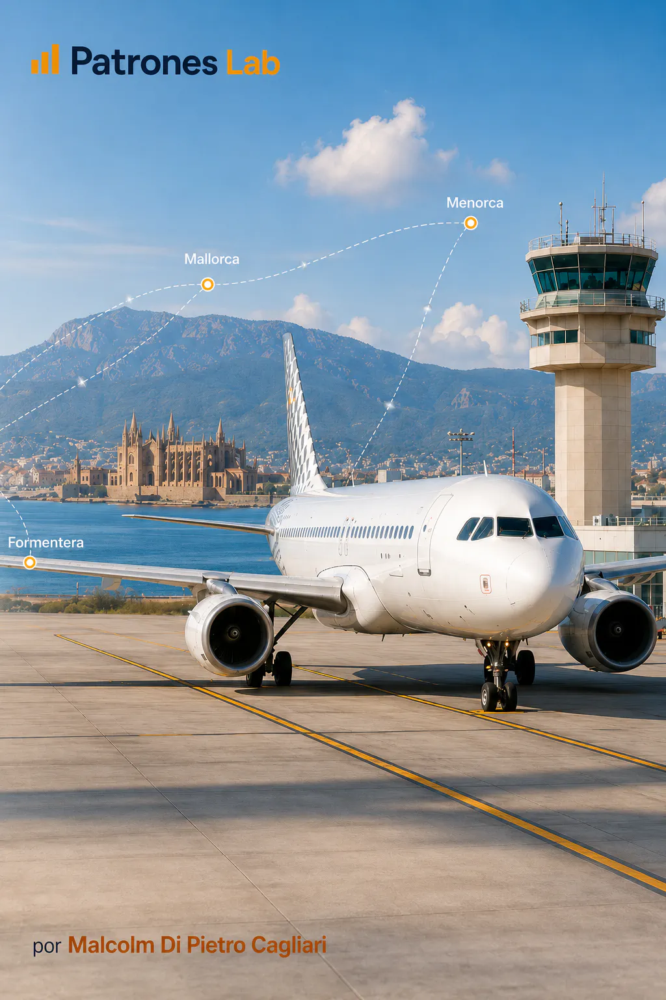

Proyecto 01 · Analítica de datos
Análisis de Vuelos en las Islas Baleares
Análisis de tráfico aéreo en España con datos públicos de AENA, con foco en volúmenes, patrones por aeropuerto y diferencias entre categorías.
CONTEXTO Y OBJETIVO
¿Qué patrones aparecen en el tráfico aéreo de las Islas Baleares cuando se miran los datos por aeropuerto, volumen y tipo de tráfico?
DATOS Y DIAGNÓSTICO
- Uso de datos públicos de AENA como fuente principal.
- Comparación de aeropuertos, categorías y variaciones de tráfico.
- Construcción de visuales para convertir datos operativos en lectura territorial.
ENTREGA Y APRENDIZAJE
El proyecto queda presentado como análisis reproducible en GitHub y como pieza editorial en LinkedIn, manteniendo una narrativa visual orientada a patrones y contexto.